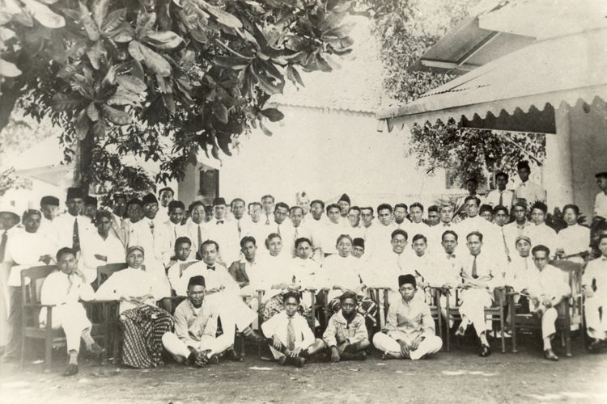
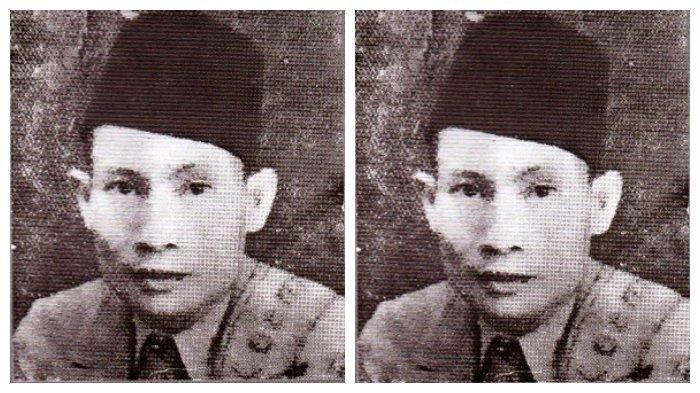
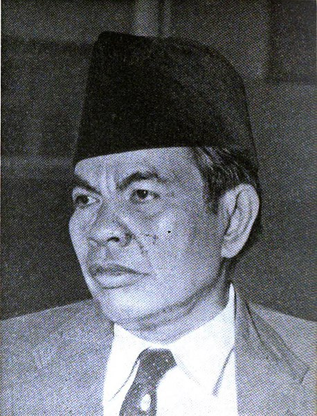
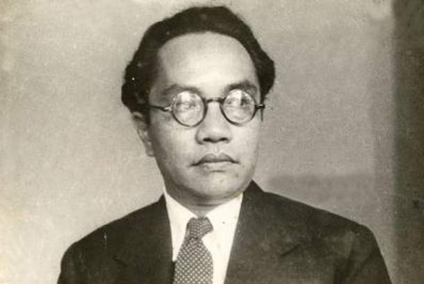
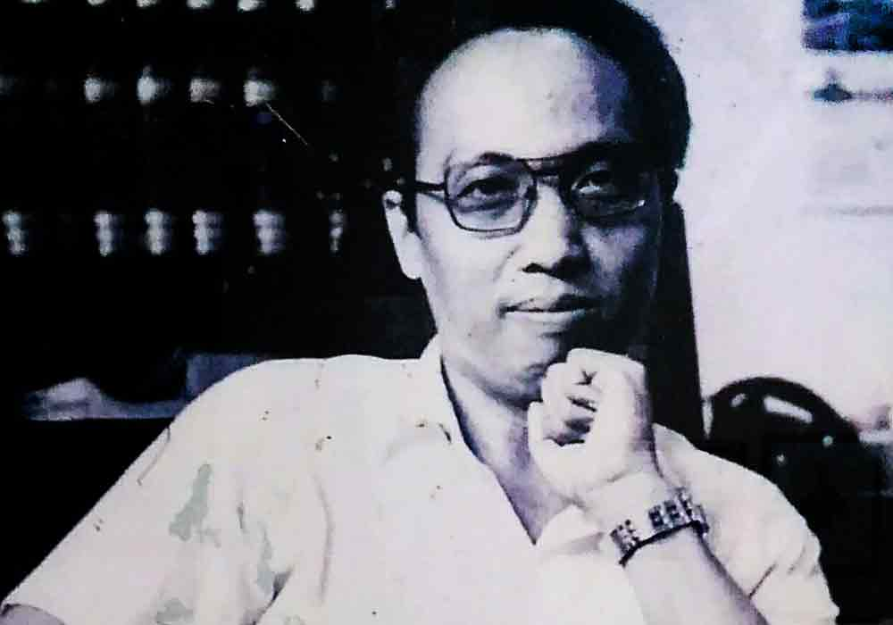
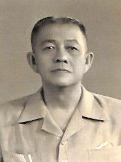
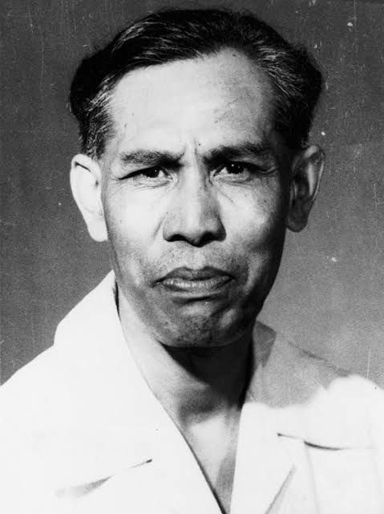
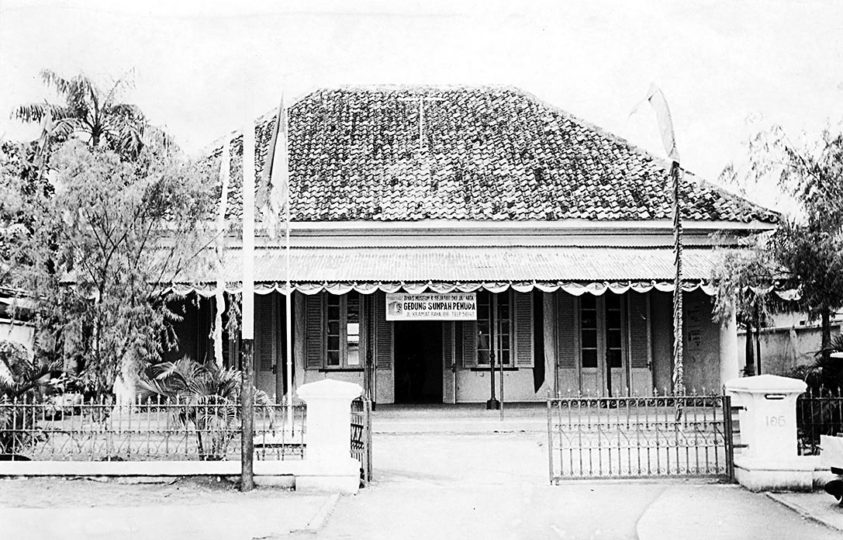

ASAL USUL SUMPAH PEMUDA
Sumpah Pemuda merupakan ikrar kebangsaan yang dirumuskan melalui sebuah putusan Kongres Pemuda Kedua di Jakarta pada 27-28 Oktober 1928. Ikrar ini adalah pernyataan kebangsaan pemuda pemuda Indonesia dari berbagai latar belakang daerah, suku, dan agama, menyatukan keyakinan mereka bahwa tumpah darah, bangsa, dan bahasa persatuan: ialah Indonesia. Keyakinan itu lalu disebarluaskan untuk dijadikan asas bagi semua perkumpulan kebangsaan Indonesia setelah peristiwa Kongres Pemuda Kedua.
Kongres Pemuda Kedua digagas oleh Perhimpunan Pelajar Pelajar Indonesia (PPPI), sebuah organisasi pemuda yang beranggotakan pelajar dari seluruh Indonesia. Kongres ini bertujuan untuk memperkuat rasa persatuan dan kebangsaan Indonesia yang telah tumbuh di dalam benak dan sanubari pemuda-pemudi. Sebelum kongres digelar, para pemuda mengadakan pertemuan terlebih dahulu pada 3 Mei 1928 dan 12 Agustus 1928. Mereka membahas tentang pembentukan panitia, susunan acara kongres, waktu, tempat, dan biaya. Kemudian pertemuan itu menyepakati bahwa Kongres Pemuda Kedua akan diselenggarakan pada 27-28 Oktober 1928 di tiga lokasi berbeda, yaitu gedung Katholieke Jongenlingen Bond, Oost Java Bioscoop, dan Indonesische Clubgebouw (Rumah Indekos, Kramat No. 106). Keseluruhan biaya akan ditanggung oleh organisasi-organisasi yang menghadiri kongres serta sumbangan sukarela. Selain itu, pertemuan juga menyepakati pembentukan kepanitiaan kongres dengan susunan sebagai berikut:- Ketua: Sugondo Djojopuspito (PPPI) 
- Wakil Ketua: R.M. Djoko Marsaid (Jong Java)
- Sekretaris: Muhammad Yamin (Jong Sumatranen Bond) 
- Bendahara: Amir Sjarifudin (Jong Bataks Bond) 
- Pembantu I: Johan Mahmud Tjaja (Jong Islamieten Bond)
- Pembantu II: R. Katja Soengkana (Pemoeda Indonesia) 
- Pembantu III: R.C.L. Sendoek (Jong Celebes) 
- Pembantu IV: Johannes Leimena (Jong Ambon) 
- Pembantu V: Mohammad Rochjani Su’ud (Pemoeda Kaoem Betawi)


RAPAT PERTAMA, GEDUNG KATHOLIEKE JONGENLINGEN BOND “Perceraiberaian itu wajiblah diperangi, agar kita bisa bersatu” (Sambutan Sugondo Djojopuspto dalam pembukaan kongres) Rapat pertama, malam hari Sabtu, 27 Oktober 1928, di Gedung Katholieke Jongenlingen Bond (KJB), Ketua Kongres, Sugondo Djojopuspito, memberi sambutan. Ia berharap kongres ini dapat memperkuat semangat persatuan dalam sanubari para pemuda. Acara dilanjutkan dengan uraian Mohammad Yamin tentang arti dan hubungan persatuan dengan pemuda. Menurutnya, ada lima faktor yang bisa memperkuat persatuan Indonesia yaitu sejarah, bahasa, hukum adat, pendidikan, dan kemauan. RAPAT KEDUA, GEDUNG OOST-JAVA BIOSCOOP “Di Indonesia ini, mesti lebih banyak perubahan-perubahannya dalam segala apapun juga. Kita harus membuang jauh-jauh itu tabiat mempermanja anak-anak kita” (Poernomowoelan) Rapat kedua, pagi hari, Minggu, 28 Oktober 1928, di Gedung Oost-Java Bioscoop, membahas masalah pendidikan. Kedua pembicara, Poernomowoelan dan Sarmidi Mangoensarkoro, berpendapat bahwa anak harus mendapat pendidikan kebangsaan, harus pula ada keseimbangan antara pendidikan di sekolah dan di rumah. Anak juga harus dididik secara demokratis. RAPAT KETIGA, GEDUNG INDONESISCHE CLUBGEBOUW “Pramuka tanpa semangat kebangsaan bukanlah Pramuka…” (Theo Pangemanan) Rapat ketiga, sore hari, Minggu, 28 Oktober 1928, Soenario menjelaskan pentingnya nasionalisme dan demokrasi selain gerakan kepanduan. Kemudian Ramelan mengemukakan tentang gerakan kepanduan yang tidak bisa dipisahkan dari pergerakan nasional. Gerakan kepanduan sejak dini mendidik anak-anak disiplin dan mandiri, hal-hal yang dibutuhkan dalam perjuangan. Theo Pengamanan menyampaikan bahwa pandu sejati adalah pandu berdasarkan semangat kebangsaan dan rasa cinta tanah air Indonesia. Sebelum kongres ditutup diperdengarkan lagu “Indonesia Raya” oleh Wage Rudolf Supratman melalui lantunan biola. Lagu tersebut disambut dengan sangat antusias oleh peserta kongres. Kemudian kongres ditutup dengan pembacaan sebuah keputusan oleh Sugondo Djojopuspito. Keputusan ini dirumuskan oleh Mohammad Yamin.
Sejarah Gedung Sumpah Pemuda : Awalnya Merupakan Rumah Sewa
Dilansir dari situs Museum Sumpah Pemuda, gedung Sumpah Pemuda awalnya merupakan rumah milik Sie Kong Liang. Sejak tahun 1908, Gedung Kramat 106 ini disewa oleh beberapa pelajar Stovia (School tot Opleiding van Inlandsche Artsen) dan RS (Rechtsschool) sebagai tempat tinggal dan belajar.
Saat itu gedung tersebut dikenal dengan nama "Commensalen Huis". Banyak sekali tokoh-tokoh terkenal yang pernah tinggal di rumah tersebut. Seperti, Muhammad Yamin, Amir Sjarifuddin, Abu Hanifah, Koentjoro Poerbopranoto, Mohammad Amir, Roesmali, Mohammad Tamzil, dan masih banyak lagi.
Sejarah Gedung Sumpah Pemuda : Dijadikan Museum
Gedung yang bernama Gedung Kramat 106 tersebut telah digunakan oleh berbagai organisasi pergerakan pemuda untuk melakukan kegiatan pergerakan. Maka dari itu, Gedung Kramat 106 kemudian dijadikan museum dengan nama Gedung Sumpah Pemuda.
Gedung Kramat Raya 106 dijadikan Museum karena memiliki sederet perjalanan sejarah dan menjadi saksi dari proses pembentukan semangat perjuangan bagi kemerdekaan Indonesia. Di tempat dilaksanakannya Kongres Pemuda Kedua ini, Sumpah Pemuda didiskusikan, dirumuskan, dan kemudian diikrarkan.